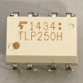

モーターのPWM制御
PWMとは
PWMとは、Pulse Width Modulationの略でパルス幅変調という。一定周期の中で出力がHIGHの長さとLOWの長さ比(デューティ比)で出力が決まる。
出力が
5Vでデューティ比が25%であれば、出力は1.25Vになる。出力電圧は以下の式で求められる。
(出力電圧) = (最大電圧) × (デューティ比)
そのため、デューティ比が小さすぎると素子によってはデューティ比0％とあまり変わらない結果が得られるものもある。各素子の最低電圧などを確認すること。
モーターを回す
回路的には以下のようになっている。
モーターの動作電圧が12Vでマイコンからの信号の電圧が5Vか3.3Vなので電圧を上げる必要がある。それをフォトカプラ基板で信号のやり取りを行っている。また、PWMの周期を83[μs]に設定する。これはモタドラICの周波数が12[kHz]あたりがいいらしいからだ(モタドラICHIP4081AIPZ)。
フォトカプラによる動作の違い
| フォトカプラ | 部品 | 用途 | 向き |
|---|---|---|---|
| TLP621 | ディジタルの変換 | 左下にある◯がマイコン側 | |
| TLP521-2 |  | ディジタルの変換×2 | 左下にある◯がマイコン側または、角が削れている方がマイコン側 |
| PS9513 |  | PWMの変換 | 左下にある◯がマイコン側 |
| TLP250H |  | PWMの変換 | 左下にある◯がマイコン側または、角が削れている方がマイコン側 |
注意点
TLP521-2はPWMの変換と同じような大きさだが内部の配線ではTLP621が2個あるような配置になっている。PWMの変換には使用できないので注意。PS9513を標準とするとTLP250Hは出力が反転している。例えば、入力に0が入っている場合PS9513では出力が0だが、TLP250Hでは255が出力される。使用するフォトカプラに合わせてコードを書き換える必要がある。
左回りと右回り(正転と反転)
| PWM側フォトカプラ | Digi | LOWの時のデューティ比 | HIGHの時のデューティ比 | 回転方向 | 出力波形部分 |
|---|---|---|---|---|---|
| PS9513 | 0 | 0 | 255 | 左回り | ① |
| PS9513 | 1 | 255 | 0 | 右回り | ② |
| TLP250H | 0 | 255 | 0 | 左回り | ② |
| TLP250H | 1 | 0 | 255 | 右回り | ① |
出力波形